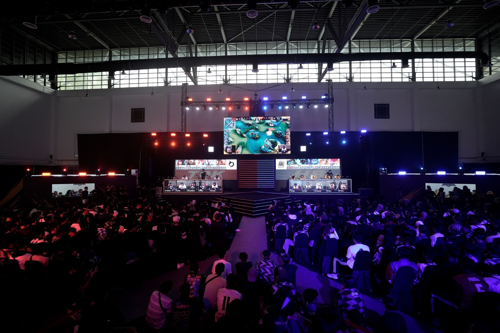

Travel to Japan
In my free time, I enjoy immersing myself in various forms of entertainment that spark creativity and relaxation. Playing games on both mobile and PC is one of my favorite pastimes, as it allows me to challenge myself, strategize, and connect with others in vibrant virtual worlds. I am also a passionate anime enthusiast, drawn to its captivating stories and visually stunning artistry. Alongside this, I love delving into manga and novels, where I can lose myself in imaginative narratives and explore different perspectives. I already made some plans by reviewing Travel Japan, website as I always dreamed of and on my way to achieving this bucket list by creating a savings account. Below is one of my favorite Japan travel vlog.
Gaming Enthusiasts
I am die die-hard fan of gaming, constantly immersed in the world of video games across all genres. My all-time spend game is a mobile game called Mobile Legends Bang Bang which has fast-paced gameplay and a competitive atmosphere. In the past, I even joined a semi-professional team and participated in the qualification tournament for a major league called MPL Malaysia Season 12. Mobile Legends isn't just a game for me—it’s a passion that brings me excitement, a sense of achievement, and a connection with a global community of players
MPL S12 Opening - Download
My edited clipped video in one of my MLBB tournameents
FUNK UNIVERSO - Download
Hobbies
- Gaming
- Clash of Clan (Pap X Gaming)
- Running
As you can see in my gallery, I love playing games wether mobile games or PC games because its a place where I can release all my tension.
Clash of Clans is my favorite strategy mobile game. I started playing this game in primary so basically, I grew up with the game lol.
Running is one of my favorite hobbies, allowing me to clear my mind, stay fit, and challenge myself with every step. Whether it’s a casual jog or a race, I enjoy the sense of freedom and accomplishment that comes with each run. It’s not just a physical activity for me, but also a way to push my limits and find moments of personal reflection..
My All Time Favorite Anime
- Official Website
As a dedicated anime fan, I’ve watched countless series, but my all-time favorite will always be Tokyo Ghoul Series. The anime series captivated me with its dark, gripping storyline and complex characters. I was drawn to the intense emotional depth, particularly Kaneki’s transformation, and the exploration of identity, struggle, and survival. The blend of action and psychological elements kept me hooked, while the haunting atmosphere and stunning visuals made it a truly memorable experience. Tokyo Ghoul resonates with me on a deeper level, as it challenges themes of humanity, morality, and inner conflict, making it stand out in the world of anime.